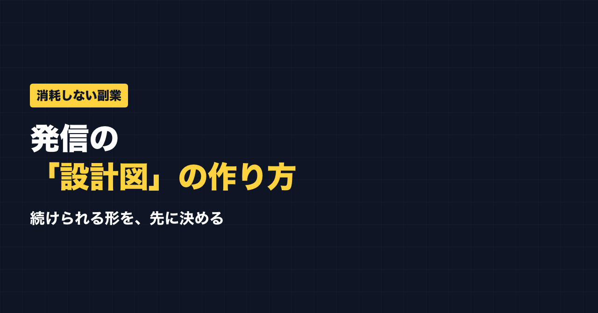

1. タイトルをコピーして、note のタイトル欄に貼る
2. 「本文1をコピー」から順にコピーし、note の本文に貼る
3. 青いラベルの位置に、images フォルダの同じ名前の画像を入れる（本文には貼られません）
※ 見出しが普通の文字になった場合は、その行を選んで「大見出し」を設定してください

副業で発信を始めたのに、いつのまにか疲れてやめてしまう。
よくある話ですが、原因の一つは設計図を持たずに走り出していることだと思います。家を建てるのに設計図なしで始める人はいません。でも発信では、なんとなく始めて消耗する人が多い。今日は、疲れにくくするための「発信の設計図」の作り方を書きます。
なぜ消耗するのか
設計図なしで発信すると、こうなりがちです。
- 毎回「何を書こう」と迷う（＝毎回ゼロから）
- 誰に向けてか曖昧で、反応が薄い（＝手応えがない）
- あれもこれも発信してブレる（＝専門性が育たない）
迷い・手応えのなさ・ブレ。この3つが、じわじわ気持ちを削ります。やる気の問題というより、設計がないことが消耗の原因になっていることが多いです。
発信の設計図：4つの要素
設計図といっても、難しくありません。次の4つを、先に決めておくだけです。
① 誰に（ターゲット）
たった1人を思い浮かべる。「1年前の自分」でもいい。この人に向けて書く、と決める。
② 何を（強み・テーマ）
自分の強みから、発信する軸のテーマを決める。ブレないための背骨です。
③ どの媒体で（チャネル）
全部やろうとしない。まず1〜2媒体に絞る。手が回る範囲で。
④ どう続けるか（仕組み）
作りだめ・型・予約投稿など、やる気に頼らない仕組みを決めておく。
④は、私自身つまずいたところです。最初は「帰宅後に1〜2時間やる」と決めていましたが、疲れてできない日が続き、できない自分に落ち込んで「自分だけだ」と感じていました。今は、昼休みや休憩の合間の5分・10分で、時間を決めずにやれるときにやるようにしています。それで気持ちが楽になって、続いています。
仕組みは「頑張れば守れるルール」ではなく、「疲れていても回るルール」にしておくのがおすすめです。
設計図があると「判断」が速くなる
設計図の効果は、迷いが減ることだけではありません。判断が速くなります。
- 「このネタ、発信する？」→ ターゲットに刺さるかどうかで決める
- 「どの媒体で出す？」→ 決めた媒体に出すだけ
いちいち悩まないぶん、時間も気力も残ります。設計図は、判断の省エネ装置です。
まず「背骨」を1本通す
一度にすべてを完璧にする必要はありません。まずは「誰に・何を」の背骨を1本通すこと。ここが決まるだけでも、発信はだいぶ楽になります。
公式LINEでは、発信や副業に使えるプロンプトを配っています。「特典」と送ると、LINE限定のプロンプト5本が届きます。
https://lin.ee/RzyA13P
自分の強みを整理して、SNSの投稿の下書きまで作れるツール「副業ドラフト」も作っています。Threads の下書き3本までは無料で試せます。
https://note-threadssf.onrender.com